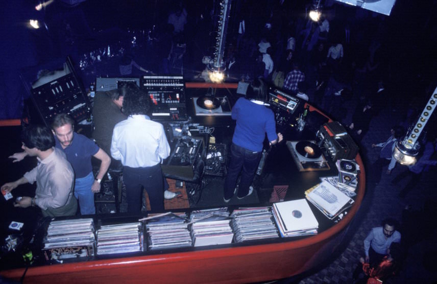
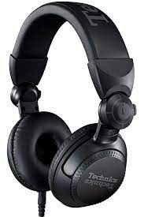

Description
Technics est une marque japonaise de matériel électronique haut de gamme, de matériels HiFi, ainsi que d'instruments de musique créée par Panasonic Corporation (ex-Matsushita) en 1965. Technics fut originellement créée pour représenter le segment haut de gamme des équipements audio chez Matsushita. De nombreux produits étaient commercialisés, tels que des tourne-disques, des amplificateurs, des tuners, des enregistreurs cassettes et des lecteurs CD. Depuis 2002, la plupart de ces produits sont commercialisés sous la marque Panasonic. Seuls les équipements de DJ et les pianos électriques sont encore commercialisés sous la marque Technics. La production de Technics, arrêtée en 2010, reprend en 2014 pour les enceintes et amplificateurs, et en 2015 pour les platines haut de gamme, où ses concurrents japonais Sony ou Pioneer (dont l'activité des platines est contrôlée par le fonds américain KKR) ont prospéré en son absence.
Logo
Technics présente dans la night life
La réputation de la marque est en partie due à un modèle de tourne-disques : la SL-1200 MK2, qui équipe de nombreuses discothèques à travers le monde.
Exemple de produit
La marque japonaise propose tout type de produit lié au mix et à l'écoute :
.jpg)
Achat
Pour acheter les produits technics, il est possible d'acheter sur un site de matériels de musique ou sur le site internet
Thomann.de Technics.frHistoire
Technics c'est avant tout une marque de matériel de musique électronique Mais sa réputation est avant due à sa platine vinyle Sl-1200 mk2 qui évolueront au fure et à mesure des années, avec plusieurs models comme la mk5 ou dernièrement la mk7.